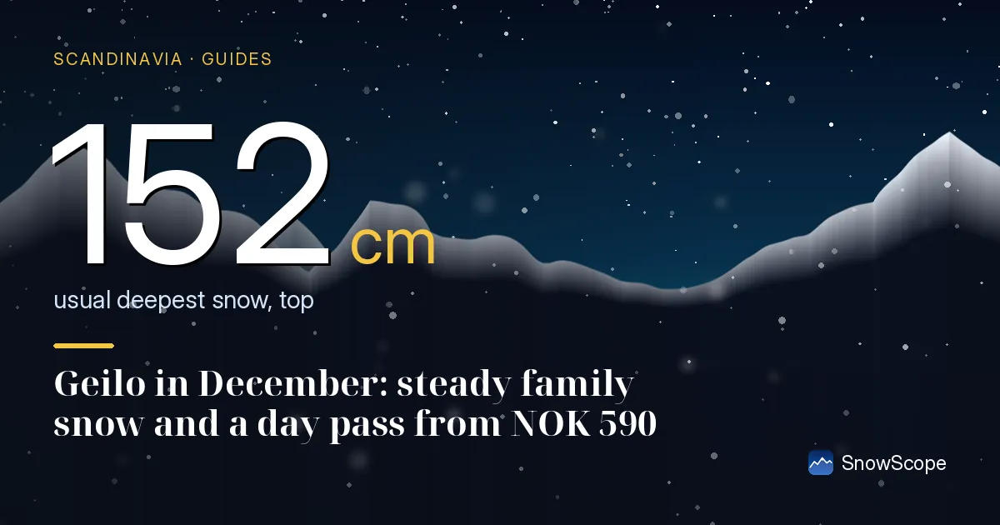

Geilo فدجنبر: تلج عائلي منتظم والنهار من 590 NOK
فالصفحة الرسمية ديال Geilo، النهار كيبدا من 590 NOK، تقريبا 56 EUR، وفالتاريخ ديالنا ديال 46 شتوة البيستات الساهلة ديالها من أكثر البلايص انتظاما فالنرويج فدجنبر: 96 % ديال الشتوات كان فيهم 30 سم ولا كثر فالوسط (971 م) فسيمانة 15 حتى 21 دجنبر.
شوف توقعات التلج مباشرة ديال Geilo فالتطبيق ديال SnowScopeالعلو ديال التلج، التنبيهات والخريطة 3D، فابور.
المبتدئين والعائلات
هادي هي المحطة العائلية النرويجية الكلاسيكية: 35 كم ديال البيستات و 20 تيليسييج فوق هضبة عالية، بفرق علو متواضع ديال 384 م بين 779 م و 1163 م. الكلمة المهمة هي «ساهل». لأول سيمانة ديال السكي التلج أهم من فرق العلو، وف Geilo التلج كيبدا من لتحت: التحت كان فيه 30 سم فسيمانة 15 حتى 21 دجنبر ف 80 % من الشتوات، وعمرو ما كان عريان نهار 15 دجنبر ف 46 شتوة.


اللي كيعرفو يتزلجو
ما غاديش تلقى بيستات طوال وواقفين، ولكن غادي تلقى التلج. فالفوق 98 % ديال الشتوات كان فيهم 30 سم ولا كثر فكل سيمانة ديال دجنبر من 8 لفوق، و 83 % كان فيهم 60 سم ولا كثر تما فسيمانة نوال. نهار 15 دجنبر عادي كيعطي 42 سم لتحت، 57 سم فالوسط و 68 سم فالفوق.
التلج اللي ورا النصيحة
التلج هنا ما مخزون فأرض باردة وعالية، وهاد المخزون كيتعمر بكري: النهار العادي ديال 30 سم فالوسط هو 14 نونبر. حتى عام ضعيف (شتوة من 10) كيبقى فيه 35 سم فالوسط نهار 15 دجنبر.
الاتجاه هابط ولكن ماشي بزاف. المعدل ديال دجنبر لتحت نزل من 51 سم فأول 15 شتوة ل 32 سم فآخر 15؛ وفالوسط من 64 ل 52 سم. وكل سيمانة نوال فآخر 15 شتوة مازال فيها 30 سم فالوسط.
التكلفة
الصفحة الرسمية ديال السكيباس ف Geilo كتبين النهار للكبار من 590 NOK والسكيباس ديال بزاف ديال الأيام من 1138 NOK؛ الأثمنة على حساب التاريخ وعدد الأيام. بسعر الصرف المرجعي ديال 12 نونبر، 590 NOK هي تقريبا 56 EUR. هادا ثمن «من»: شوف التواريخ ديالك فالحانوت قبل ما تحسب عليه.
ولا Hafjell؟
Hafjell، المحطة الأولمبية القديمة حدا Lillehammer، فيها فرق علو كبير بزاف (866 م) ولكن كتبدا هابطة بزاف، ف 192 م. التلج ديالها فدجنبر شوية أرق فالوسط: 52 سم نهار 15 دجنبر عادي و 85 % ديال الشتوات فيهم 30 سم فسيمانة 15 حتى 21 دجنبر. الأثمنة تما حتى هي متبدلة، وما قدرناش نقراو ثمن ثابت فالصفحة الرسمية.
للعائلات اللي بغاو تلج مضمون فدجنبر فبيستات ساهلة، Geilo هي الاختيار الأضمن.
نصايح للي كيتزلجو
- حجز أي سيمانة من 8 دجنبر: من تما الفوق كان فيه 30 سم ف 98 % من الشتوات.
- شوف أونلاين الثمن ديال التواريخ ديالك بالضبط: 590 NOK هو ثمن «من».
- Geilo فالخط ديال التران Oslo-Bergen: التران كيعفيك من الطوموبيل فطرقان الشتا.
- لبس للبرد القاسح؛ الهضبة مكشوفة والنهار فدجنبر قصير.
خرائط أخرى (مواقع خارجية)
المراجع والمصادر
- Geilo: official lift-pass prices (2026-27), checked 13 November 2026 www.skigeilo.no/en/ski-pass
- Hafjell: official lift-pass page of the operator (prices by date; no fixed price quoted), checked 13 November 2026 www.alpinco.com/en/hafjell/buy-day-pass-1-8-days
- European Central Bank euro reference rates (2026-11-12) www.ecb.europa.eu/stats/policy_and_exchange_rates/euro_reference_exchange_rates/html/index.en.html
على هاد الأرقام
الأرقام ديال التلج: التاريخ ديال التلج ديال SnowScope، 46 شتوة اللي فاتت (1980-81 حتى ل 2025-26) فالعلوات ديال المحطة، مصحح بالعلو (تقدير لمنطقة، ماشي البلاغات ديال المحطة)؛ «تلج مزيان» = 30 سم ولا كثر فالأرض فالمعدل ديال السيمانة. الخريطة: العلو العادي ديال التلج نهار 15 دجنبر موزع على التضاريس حسب العلو. البيستات والتيليسييجات: OpenSkiMap. الأثمنة ديال السكيباس: اللوائح الرسمية ديال المحطات، متشافة نهار 13 نونبر 2026؛ الأثمنة تقدر تتبدل.
النشرات الرسمية ديال الانهيارات: Varsom (NVE)
كيفاش تستاشهد بهاد المقال
للبحث، التعليم ولا الصحافة: الأرقام والرسومات تقدر تعاود تخدم بيهم بحرية تحت CC BY 4.0 مع هاد الاستشهاد.
SnowScope (2026), Geilo فدجنبر: تلج عائلي منتظم والنهار من 590 NOK, https://snowscope.app/blog/ar/2026/11/geilo-december-ski-trip-family-cheap-snow.html, تشاف ف 2026-11-14
SnowScope (Atlas Labs). (2026, November 14). Geilo فدجنبر: تلج عائلي منتظم والنهار من 590 NOK. SnowScope snow reports. https://snowscope.app/blog/ar/2026/11/geilo-december-ski-trip-family-cheap-snow.html
BibTeX
@misc{snowscope2026geilodecemberskitripfami,
author = {{SnowScope (Atlas Labs)}},
title = {Geilo فدجنبر: تلج عائلي منتظم والنهار من 590 NOK},
year = {2026},
month = nov,
howpublished = {\url{https://snowscope.app/blog/ar/2026/11/geilo-december-ski-trip-family-cheap-snow.html}},
note = {Published 2026-11-14 13:29 UTC; accessed 2026-11-14}
}· CC BY 4.0 · الطريقة، الداتا والأدوات →
Geilo: التلج والحرارة حسب العلو، هاد الشتا مقارنة مع اللي فاتت (الأدوات) →
تابع Geilo
فابور: ميساج ملي يجي التلج، والتوقعات كل صباح.